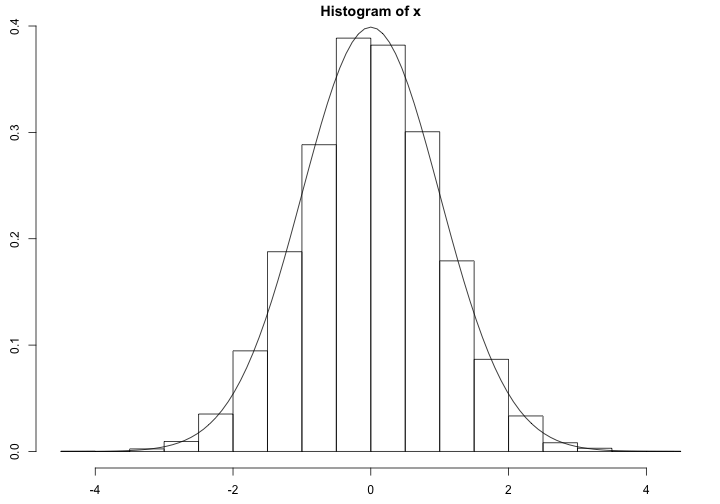

- \(\frac{1}{n}\sum_{i}x_i\) ということです。
- 例えば1から10までの平均は5.5です。
乱数の生成
10000個の正規乱数を生成して平均値を求めます。
set.seed(42)
x <- rnorm(10000)
mean(x)
## [1] -0.01131
@kohske
10000個の正規乱数を生成して平均値を求めます。
set.seed(42)
x <- rnorm(10000)
mean(x)
## [1] -0.01131
正規乱数をヒストグラムとカーブフィッティングにより可視化します。
